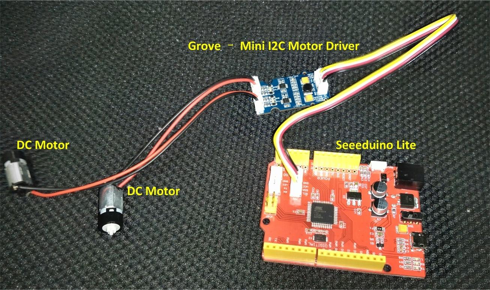

This Grove - MIni I2C motor driver included two DRV8830, The DRV8830 provides an integrated motor driver solution for battery-powered toys, printers, and other low-voltage or battery-powered motion control applications. The module has two H-bridge drivers, and can drive two DC motors or two winding of stepper motors, as well as other loads like solenoids.It requires an onboard 5V voltage regulator which can power the I2C bus. All driver lines are diode protected from back EMF.It features two LEDs for fault indicator and four LEDs to indicate which direction each motor is running. GROVE system plug and I2C interface enables you to daisy-chain the driver with many other devices.

This motor driver can be used to drive any brushed electronic motor as long as it doesn't consume more than 1A at 5v.
Two motors can be driven simultaneously while set to a different speed and direction.
The speed can be set fully proportional and is controlled by I2C command.
| Item | Min | Typical | Max | Unit |
|---|---|---|---|---|
| Working Voltage | 2.75 | 5 | 6.8 | VDC |
| Max Output Current per channel | 0.2(default) | - | 1 | A |
| Input/output voltage on I2C bus | 3.3/5 | V | ||
| Communication protocol | I2C | / | ||
| Default I2C Address | 0xC0, 0xC4 | / | ||
| Arduino UNO | Base Shield | Grove - Mini I2C Motor Driver |
|---|---|---|
| 5V | I2C port | VCC |
| GND | GND | |
| SDA | SDA | |
| SCL | SCL |
The default maximum drive current of each channel is 200mA, see the front picture of the board
Each channel (CH1,CH2) has been added a resistor, and each value of resistor (R5,R12) is 1 Ω, so the maximum drive current is 200mA according to the following equation
Meantime, each channel provides a reserved solderable pad (R6 for CH1, R13 for CH2), so you can solder a resistor onto the board to change the resistor value of each channel. Following is the new equation if adding resistor to the board
Caution:
The I2C address of each channel is changeable. Please take a look at the back side of the board, you will find there's 4 jumper pads, A0_CH1 and A1_CH1 are for channel 1, A0_CH2 and A1_CH2 are for channel 2. As shown below:
You can solder or unsolder each jumper to change the I2C address:
Note1: The library of Grove - Mini I2C Motor driver is depended on the default address.
Now, Let's begin to use the Grove - Mini I2C Motor Driver.
Now we are making a demo for Grove - Mini I2C Motor Driver v1.0 which require following modules.
Seeeduino Lite is compatible with Arduino.
If you are using an Arduino UNO or any others Arduino compatible boards that with out a Grove connect,
You'll need a Grove Base Shield to connect the Grove easily.
If this is your first time using Arduino or Seeeduino, Please put hand on here to start your Arduino journey.
Grove - Mini I2C Motor Driver got one Grove socket for connecting two modules above.
They are:
As shown below:

The Grove - Mini I2C Motor Driver can control motor which is based on the chip DRV8830. The DRV8830 is not just a dual motor driver, it is a dual H-bridge. An h-bridge is basically a specific setup of transistors that allow you to switch direction of current. You can use your Arduino to make them spin at any speed. Because the module has 2 H-bridges, you can not only make a robot go forwards and backwards, but also turn around by having each wheel spin in a different direction.
Connect Seeeduino to computer use a micro USB cable.
Now, let's use the Grove - Mini I2C Motor Driver to control two DC motors rotating in the positive or opposite direction.
The below is an example program to be used with an Arduino. The code for this is very basic, but you can also change it up and do it your own way.
/**************************************************************** Example code demonstrating the use of the Arduino Library for the SparkFun MiniMoto board, which uses the TI DRV8830 IC for I2C low-voltage DC motor control. This code is beerware; if you use it, please buy me (or any other SparkFun employee) a cold beverage next time you run into one of us at the local. 17 Sep 2013- Mike Hord, SparkFun Electronics Code developed in Arduino 1.0.5, on a Fio classic board. **Updated for Arduino 1.6.4 5/2015** ****************************************************************/ #include <SparkFunMiniMoto.h> // Include the MiniMoto library // Create two MiniMoto instances, with different address settings. MiniMoto motor0(0xC4); // A1 = 1, A0 = clear MiniMoto motor1(0xC0); // A1 = 1, A0 = 1 (default) #define FAULTn 16 // Pin used for fault detection. // Nothing terribly special in the setup() function- prep the // serial port, print a little greeting, and set up our fault // pin as an input. void setup() { Serial.begin(9600); Serial.println("Hello, world!"); pinMode(FAULTn, INPUT); } // The loop() function just spins the motors one way, then the // other, while constantly monitoring for any fault conditions // to occur. If a fault does occur, it will be reported over // the serial port, and then operation continues. void loop() { Serial.println("Forward!"); motor0.drive(100); motor1.drive(100); delayUntil(1000); Serial.println("Stop!"); motor0.stop(); motor1.stop(); delay(1000); Serial.println("Reverse!"); motor0.drive(-100); motor1.drive(-100); delayUntil(1000); Serial.println("Brake!"); motor0.brake(); motor1.brake(); delay(1000); } // delayUntil() is a little function to run the motor either for // a designated time OR until a fault occurs. Note that this is // a very simple demonstration; ideally, an interrupt would be // used to service faults rather than blocking the application // during motion and polling for faults. void delayUntil(unsigned long elapsedTime) { // See the "BlinkWithoutDelay" example for more details on how // and why this loop works the way it does. unsigned long startTime = millis(); while (startTime + elapsedTime > millis()) { // If FAULTn goes low, a fault condition *may* exist. To be // sure, we'll need to check the FAULT bit. if (digitalRead(FAULTn) == LOW) { // We're going to check both motors; the logic is the same // for each... byte result = motor0.getFault(); // If result masked by FAULT is non-zero, we've got a fault // condition, and we should report it. if (result & FAULT) { Serial.print("Motor 0 fault: "); if (result & OCP) Serial.println("Chip overcurrent!"); if (result & ILIMIT) Serial.println("Load current limit!"); if (result & UVLO) Serial.println("Undervoltage!"); if (result & OTS) Serial.println("Over temp!"); break; // We want to break out of the motion immediately, // so we can stop motion in response to our fault. } result = motor1.getFault(); if (result & FAULT) { Serial.print("Motor 1 fault: "); if (result & OCP) Serial.println("Chip overcurrent!"); if (result & ILIMIT) Serial.println("Load current limit!"); if (result & UVLO) Serial.println("Undervoltage!"); if (result & OTS) Serial.println("Over temp!"); break; } } } }
Now click Upload(CTRL+U) to burn testing code. Please refer to here for any error prompt and you can also add comment on forum
After upload completed, the motors will rotating in the positive or opposite direction in cycle.
If you want to make some awesome projects by this lovely board, here are some references for you.
Every boy have the dream to make a car. Days ago I made a Never Fall Beetle, it’s very funny and so many people said the like it. Here it will make another toy car, which is much smaller and, it’s programmable. I am not going to use Shield Bot again, I will cut the car body with wooden board. And today I will just make a basic version, that means if you want you make a full and cool car, you need to make something yourself. There is 3 sensor include: Digital compass to detect the direction IR distance sensor to detect black line Ultrasonic sensor to detect the edge of desk, to avoid falling I will improve the code and outline when I get time.

Every boy have the dream to make a car. Days ago I made a Never Fall Beetle, it’s very funny and so many people said the like it. Here it will make another toy car, which is much smaller and, it’s programmable. I am not going to use Shield Bot again, I will cut the car body with wooden board. And today I will just make a basic version, that means if you want you make a full and cool car, you need to make something yourself. There is 3 sensor include: Digital compass to detect the direction IR distance sensor to detect black line Ultrasonic sensor to detect the edge of desk, to avoid falling I will improve the code and outline when I get time.